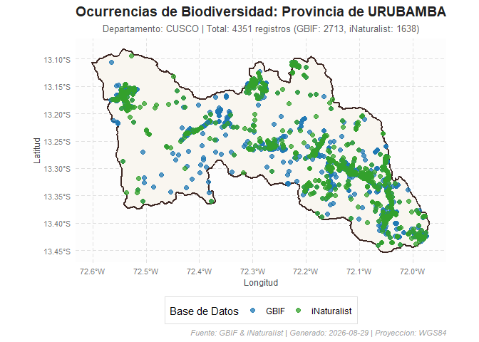

peruocc: Recuperación y Consolidación de Ocurrencias de Biodiversidad en Unidades Administrativas del Perú
peruocc es un paquete y conjunto de herramientas en R diseñado para buscar, descargar, filtrar, validar y consolidar registros de ocurrencias de biodiversidad (flora y fauna) en el territorio peruano, utilizando como marco espacial las delimitaciones administrativas oficiales a escala de distritos y provincias.
El paquete integra y estandariza la información disponible de dos de los mayores repositorios globales de biodiversidad: GBIF (Global Biodiversity Information Facility) e iNaturalist, generando un objeto unificado con atributos estandarizados y trazabilidad completa dentro del área de interés.
⚡ Inicio Rápido (Quickstart)
library(peruocc)
# Consulta en memoria: Flora en el distrito de Cusco (Cusco)
resultado <- buscar_especies_distrito(
distrito = "Cusco",
departamento = "Cusco",
provincia = "Cusco",
grupo = "flora"
)
# 1. Ver las primeras ocurrencias tabulares (Darwin Core)
head(resultado$ocurrencias)
# 2. Generar mapa temático inmediato en ggplot2
graficar_ocurrencias(resultado, color_por = "source")Tabla de Referencia Rápida
| Función | Propósito Principal | Tipo de Entrada |
|---|---|---|
buscar_especies_distrito() |
Búsqueda directa en un distrito oficial | Nombre de distrito + departamento |
buscar_especies_provincia() |
Búsqueda en una provincia (distritos disueltos) | Nombre de provincia + departamento |
buscar_especies_poligono() |
Búsqueda en geometrías de usuario / buffers | Objeto sf o archivo (.shp, .geojson) |
buscar_especies_peru() |
Consulta unificada con partición adaptativa | Nivel ("distrito" o "provincia") |
obtener_poligono_distrito() |
Obtiene la geometría oficial sf de un distrito |
Nombre de distrito + departamento |
obtener_poligono_provincia() |
Obtiene la geometría disuelta sf de una provincia |
Nombre de provincia + departamento |
graficar_ocurrencias() |
Visualización cartográfica en ggplot2
|
Objeto devuelto por buscar_especies_*
|
exportar_resultados() |
Guarda en disco en formatos CSV, GeoJSON y JSON | Objeto devuelto por buscar_especies_*
|
peruocc_data_dir() |
Configura ruta central de caché y exportación | Ruta de directorio |
Características Principales
-
Marco Administrativo Oficial (Distritos y Provincias):
- Recupera dinámicamente geometrías oficiales provistas por el INEI a través del paquete
geoperu. - Admite consultas a nivel de distrito y consolidación disuelta a nivel de provincia.
- Recupera dinámicamente geometrías oficiales provistas por el INEI a través del paquete
-
Caché Local Inteligente (
.rds):- Almacena en disco los límites departamentales descargados, reduciendo drásticamente los tiempos de respuesta en consultas recurrentes.
-
Flujo Espacial y Topológico Riguroso:
- Corrige automáticamente la orientación geométrica a sentido antihorario (CCW) según los estándares OGC/GBIF.
- Aplica simplificación métrica adaptativa en proyecciones UTM para polígonos complejos en consultas de API.
- Realiza una intersección espacial exacta (
sf::st_intersects) en R con el polígono detallado original, garantizando que sólo se conserven los registros estrictamente dentro de los límites administrativos.
-
Consolidación y Estandarización de Datos:
- Homogeneiza atributos de GBIF e iNaturalist hacia un esquema estándar alineado con Darwin Core.
- Retorna una estructura consolidada que contiene el polígono espacial (
sf), el conjunto de ocurrencias tabulares (data.frame), el resumen analítico y los parámetros de ejecución.
-
Exportación y Trazabilidad:
- Exporta automáticamente a formatos CSV, capas espaciales GeoJSON, mapas de alta resolución (PNG) y manifiestos de reproducibilidad (JSON).
Flujo de Integración de Datos
┌──────────────────────────────┐
│ Unidad Administrativa │
│ (Distrito o Provincia) │
└──────────────┬───────────────┘
│
┌──────────────▼──────────────┐
│ Geometría Oficial geoperu │
│ + Validación / Caché RDS │
└──────────────┬───────────────┘
│
┌────────────────┴────────────────┐
│ │
┌──────────▼──────────┐ ┌──────────▼──────────┐
│ Consulta a GBIF │ │ Consulta iNaturalist│
│ (WKT / Taxonomía) │ │ (Bounding Box) │
└──────────┬──────────┘ └──────────┬──────────┘
│ │
└────────────────┬────────────────┘
│
┌──────────────▼──────────────┐
│ Filtrado Espacial en R │
│ (sf::st_intersects exacto) │
└──────────────┬───────────────┘
│
┌──────────────▼──────────────┐
│ Estandarización Darwin Core │
│ + Deduplicación interna │
└──────────────┬───────────────┘
│
┌──────────────▼──────────────┐
│ Objeto Consolidado Final │
│ (sf + data.frame + Resumen) │
└─────────────────────────────┘-
Obtención y Preparación del Polígono: Se consulta
geoperupara descargar o cargar desde el caché local el departamento correspondiente. Si la consulta es distrital, se extrae el distrito específico; si es provincial, se disuelven espacialmente todos sus distritos componentes (sf::st_union). -
Consulta a Repositorios Vivos:
- GBIF: Se envía el polígono en formato WKT (simplificado si supera límites de caracteres) junto con los filtros taxonómicos (Reino, taxón específico o grupo).
- iNaturalist: Se utiliza la caja delimitadora (Bounding Box) del polígono junto a los criterios de búsqueda (flora/fauna, taxón o texto libre).
-
Validación Espacial en Memoria: Ambos conjuntos de puntos recuperados se transforman a objetos espaciales
sf(EPSG:4326) y se intersecan topológicamente con el polígono detallado original, eliminando cualquier falso positivo fuera del perímetro. - Estandarización: Se mapean los campos nativos de ambas fuentes a una estructura de columnas común, preservando identificadores de origen, coordenadas, taxonomía, fecha y jerarquía administrativa.
Instalación y Carga
1. Instalación:
# Instalar versión estable desde CRAN:
install.packages("peruocc")
# O instalar la versión en desarrollo desde GitHub:
# install.packages("remotes")
remotes::install_github("PaulESantos/peruocc")2. Configuración de directorio de trabajo:
library(peruocc)
#> ── Cargando peruocc ────────────────────────────────────────────────── v0.1.0 ──
#> ✔ geoperu 0.0.2 • Límites cartográficos oficiales del Perú
#> ✔ rgbif 3.8.5 • Extracción de ocurrencias desde GBIF
#> ✔ rinat 0.1.10 • Observaciones ciudadanas de iNaturalist
#> ✔ sf 1.1.1 • Operaciones geométricas y filtros espaciales
# Configurar directorio donde se guardarán caché, resultados y manifiestos
peruocc_data_dir("peruocc-output")Guía de Uso y Escalabilidad Funcional
El paquete proporciona interfaces tanto específicas como unificadas para consultar ocurrencias en diferentes niveles administrativos:
1. Consulta Unificada (buscar_especies_peru)
Permite seleccionar el nivel administrativo mediante el argumento nivel = c("distrito", "provincia"):
# Consulta a nivel distrital en el distrito de Cusco (Cusco)
res_distrito <- buscar_especies_peru(
nombre = "Cusco",
nivel = "distrito",
departamento = "Cusco",
provincia = "Cusco",
grupo = "flora", # "flora", "fauna" o NULL
limite_por_api = 200
)
#>
#> ── Búsqueda Integrada: CUSCO (DISTRITO) ────────────────────────────────────────
#> • Departamento: Cusco
#> • Provincia: Cusco
#> • Grupo: flora
#> ℹ Cargando límites de CUSCO desde el caché local...
#> ℹ [GBIF] Iniciando búsqueda de ocurrencias...
#> ✔ Polígono simplificado con éxito a tolerancia de 100 metros (WKT: 1153 caracteres).
#> ℹ [GBIF] Filtrando por reino Plantae (Flora).
#> ℹ [GBIF] Consultando registros dentro del polígono de CUSCO (límite: "200")...
#> ✔ [GBIF] Búsqueda finalizada. Se filtraron 200 registro(s) que caen dentro del polígono seleccionado.
#> ℹ [iNaturalist] Iniciando búsqueda de ocurrencias...
#> ℹ [iNaturalist] Filtrando por reino Plantae (Flora).
#> ℹ [iNaturalist] Consultando registros dentro de la caja delimitadora de CUSCO (límite: "200")...
#> ℹ [iNaturalist] Se descargaron 200 registros en la caja delimitadora. Aplicando filtro espacial...
#> ✔ [iNaturalist] Búsqueda finalizada. 165 de 200 registros caen dentro del polígono seleccionado.
#> ✔ Consolidación exitosa. Total de registros unificados: 365
#>
#> ── Resumen de Registros ──
#>
#> • GBIF: 200 registro(s)
#> • iNaturalist: 165 registro(s)
#> ✔ Total consolidado: 365 registro(s)
res_distrito$ocurrencias
#> # A tibble: 365 × 24
#> occurrenceID sourceRecordID sourceURL datasetKey license basisOfRecord
#> <chr> <chr> <chr> <chr> <chr> <chr>
#> 1 5938706538 5938706538 https://… 50c9509d-… http://… HUMAN_OBSERV…
#> 2 6129993447 6129993447 https://… 50c9509d-… http://… HUMAN_OBSERV…
#> 3 6130469893 6130469893 https://… 50c9509d-… http://… HUMAN_OBSERV…
#> 4 6130572167 6130572167 https://… 50c9509d-… http://… HUMAN_OBSERV…
#> 5 6130708471 6130708471 https://… 50c9509d-… http://… HUMAN_OBSERV…
#> 6 6131387088 6131387088 https://… 50c9509d-… http://… HUMAN_OBSERV…
#> 7 6131648674 6131648674 https://… 50c9509d-… http://… HUMAN_OBSERV…
#> 8 6133055337 6133055337 https://… 50c9509d-… http://… HUMAN_OBSERV…
#> 9 6133273135 6133273135 https://… 50c9509d-… http://… HUMAN_OBSERV…
#> 10 6159246603 6159246603 https://… 50c9509d-… http://… HUMAN_OBSERV…
#> # ℹ 355 filas más
#> # ℹ 18 variables más: scientificName <chr>, decimalLatitude <dbl>,
#> # decimalLongitude <dbl>, eventDate <chr>, taxonRank <chr>, kingdom <chr>,
#> # phylum <chr>, class <chr>, order <chr>, family <chr>, genus <chr>,
#> # species <chr>, recordedBy <chr>, coordinateUncertaintyInMeters <dbl>,
#> # source <chr>, district <chr>, province <chr>, department <chr>
#> # ℹ Use `print(n = ...)` para ver más filas
# Consulta a nivel provincial en la provincia de Cusco
res_provincia <- buscar_especies_peru(
nombre = "Cusco",
nivel = "provincia",
departamento = "Cusco",
grupo = "fauna",
limite_por_api = 200
)
#>
#> ── Búsqueda Integrada: CUSCO (PROVINCIA) ───────────────────────────────────────
#> • Departamento: Cusco
#> • Grupo: fauna
#> ℹ Procesando 8 lotes espaciales (distritos): "SANTIAGO", "WANCHAQ", "CCORCA", "SAN SEBASTIAN", "SAYLLA", "POROY", "SAN JERONIMO", and "CUSCO"
#> ℹ Lote 1/8 [SANTIAGO]: recuperado de checkpoint (287 registros).
#> ℹ Lote 2/8 [WANCHAQ]: recuperado de checkpoint (295 registros).
#> ℹ Lote 3/8 [CCORCA]: recuperado de checkpoint (203 registros).
#> ℹ Lote 4/8 [SAN SEBASTIAN]: recuperado de checkpoint (216 registros).
#> ℹ Lote 5/8 [SAYLLA]: recuperado de checkpoint (229 registros).
#> ℹ Lote 6/8 [POROY]: recuperado de checkpoint (204 registros).
#> ℹ Lote 7/8 [SAN JERONIMO]: recuperado de checkpoint (342 registros).
#> ℹ Lote 8/8 [CUSCO]: recuperado de checkpoint (365 registros).
#> ✔ Consolidación exitosa. Total de registros unificados: 2141
#>
#> ── Resumen de Registros ──
#>
#> • GBIF: 1597 registro(s)
#> • iNaturalist: 544 registro(s)
#> ✔ Total consolidado: 2141 registro(s)
res_provincia$ocurrencias
#> # A tibble: 2,141 × 24
#> occurrenceID sourceRecordID sourceURL datasetKey license basisOfRecord
#> <chr> <chr> <chr> <chr> <chr> <chr>
#> 1 6130955903 6130955903 https://… 50c9509d-… http://… HUMAN_OBSERV…
#> 2 6147676011 6147676011 https://… 50c9509d-… http://… HUMAN_OBSERV…
#> 3 6147584943 6147584943 https://… 50c9509d-… http://… HUMAN_OBSERV…
#> 4 6147634578 6147634578 https://… 50c9509d-… http://… HUMAN_OBSERV…
#> 5 6171147726 6171147726 https://… 50c9509d-… http://… HUMAN_OBSERV…
#> 6 6452273700 6452273700 https://… 50c9509d-… http://… HUMAN_OBSERV…
#> 7 6195560404 6195560404 https://… 50c9509d-… http://… HUMAN_OBSERV…
#> 8 6414124325 6414124325 https://… 50c9509d-… http://… HUMAN_OBSERV…
#> 9 6481433622 6481433622 https://… 50c9509d-… http://… HUMAN_OBSERV…
#> 10 5087130717 5087130717 https://… 50c9509d-… http://… HUMAN_OBSERV…
#> # ℹ 2,131 filas más
#> # ℹ 18 variables más: scientificName <chr>, decimalLatitude <dbl>,
#> # decimalLongitude <dbl>, eventDate <chr>, taxonRank <chr>, kingdom <chr>,
#> # phylum <chr>, class <chr>, order <chr>, family <chr>, genus <chr>,
#> # species <chr>, recordedBy <chr>, coordinateUncertaintyInMeters <dbl>,
#> # source <chr>, district <chr>, province <chr>, department <chr>
#> # ℹ Use `print(n = ...)` para ver más filas2. Consultas Específicas por Nivel
A. A nivel de Distrito (buscar_especies_distrito)
resultado_dist <- buscar_especies_distrito(
distrito = "Tambopata",
departamento = "Madre de Dios",
provincia = "Tambopata",
nombre_cientifico = "Panthera onca", # Opcional: filtro por especie
limite_por_api = 100,
guardar_resultados = FALSE
)
#>
#> ── Búsqueda Integrada: TAMBOPATA (DISTRITO) ────────────────────────────────────
#> • Departamento: Madre de Dios
#> • Provincia: Tambopata
#> • Taxón: Panthera onca
#> ℹ Cargando límites de MADRE DE DIOS desde el caché local...
#> ✔ Consolidación exitosa. Total de registros unificados: 36
#>
#> ── Resumen de Registros ──
#>
#> • GBIF: 21 registro(s)
#> • iNaturalist: 15 registro(s)
#> ✔ Total consolidado: 36 registro(s)
resultado_dist$ocurrencias
#> # A tibble: 36 × 24
#> occurrenceID sourceRecordID sourceURL datasetKey license basisOfRecord
#> <chr> <chr> <chr> <chr> <chr> <chr>
#> 1 6334829706 6334829706 https://… 50c9509d-… http://… HUMAN_OBSERV…
#> 2 4597092810 4597092810 https://… 50c9509d-… http://… HUMAN_OBSERV…
#> 3 4606894492 4606894492 https://… 50c9509d-… http://… HUMAN_OBSERV…
#> 4 4022300813 4022300813 https://… 50c9509d-… http://… HUMAN_OBSERV…
#> 5 4852820765 4852820765 https://… 50c9509d-… http://… HUMAN_OBSERV…
#> 6 1990572488 1990572488 https://… 50c9509d-… http://… HUMAN_OBSERV…
#> 7 1571080404 1571080404 https://… 50c9509d-… http://… HUMAN_OBSERV…
#> 8 1571080408 1571080408 https://… 50c9509d-… http://… HUMAN_OBSERV…
#> 9 6236055510 6236055510 https://… 50c9509d-… http://… HUMAN_OBSERV…
#> 10 3499457688 3499457688 https://… 50c9509d-… http://… HUMAN_OBSERV…
#> # ℹ 26 filas más
#> # ℹ 18 variables más: scientificName <chr>, decimalLatitude <dbl>,
#> # decimalLongitude <dbl>, eventDate <chr>, taxonRank <chr>, kingdom <chr>,
#> # phylum <chr>, class <chr>, order <chr>, family <chr>, genus <chr>,
#> # species <chr>, recordedBy <chr>, coordinateUncertaintyInMeters <dbl>,
#> # source <chr>, district <chr>, province <chr>, department <chr>
#> # ℹ Use `print(n = ...)` para ver más filasB. A nivel de Provincia (buscar_especies_provincia)
resultado_prov <- buscar_especies_provincia(
provincia = "Urubamba",
departamento = "Cusco",
grupo = "flora",
limite_por_api = 300,
guardar_resultados = FALSE
)
#>
#> ── Búsqueda Integrada: URUBAMBA (PROVINCIA) ────────────────────────────────────
#> • Departamento: Cusco
#> • Grupo: flora
#> ℹ Procesando 10 lotes espaciales (distritos): "MARAS", "HUAYLLABAMBA", "YUCAY", "CHINCHERO", "OLLANTAYTAMBO", "MACHUPICCHU", and "URUBAMBA"
#> ℹ Lote 1/10 [MARAS]: recuperado de checkpoint (490 registros).
#> ℹ Lote 2/10 [HUAYLLABAMBA]: recuperado de checkpoint (443 registros).
#> ℹ Lote 3/10 [YUCAY]: recuperado de checkpoint (436 registros).
#> ℹ Lote 4/10 [CHINCHERO]: recuperado de checkpoint (529 registros).
#> ℹ Lote 5/10 [OLLANTAYTAMBO]: recuperado de checkpoint (239 registros).
#> ℹ Lote 6/10 [OLLANTAYTAMBO]: recuperado de checkpoint (496 registros).
#> ℹ Lote 7/10 [OLLANTAYTAMBO]: recuperado de checkpoint (126 registros).
#> ℹ Lote 8/10 [OLLANTAYTAMBO]: recuperado de checkpoint (495 registros).
#> ℹ Lote 9/10 [MACHUPICCHU]: recuperado de checkpoint (585 registros).
#> ℹ Lote 10/10 [URUBAMBA]: recuperado de checkpoint (512 registros).
#> ✔ Consolidación exitosa. Total de registros unificados: 4351
#>
#> ── Resumen de Registros ──
#>
#> • GBIF: 2713 registro(s)
#> • iNaturalist: 1638 registro(s)
#> ✔ Total consolidado: 4351 registro(s)
resultado_prov$ocurrencias
#> # A tibble: 4,351 × 24
#> occurrenceID sourceRecordID sourceURL datasetKey license basisOfRecord
#> <chr> <chr> <chr> <chr> <chr> <chr>
#> 1 6129994865 6129994865 https://… 50c9509d-… http://… HUMAN_OBSERV…
#> 2 6133077300 6133077300 https://… 50c9509d-… http://… HUMAN_OBSERV…
#> 3 6133103490 6133103490 https://… 50c9509d-… http://… HUMAN_OBSERV…
#> 4 6133145835 6133145835 https://… 50c9509d-… http://… HUMAN_OBSERV…
#> 5 6133173410 6133173410 https://… 50c9509d-… http://… HUMAN_OBSERV…
#> 6 6133262570 6133262570 https://… 50c9509d-… http://… HUMAN_OBSERV…
#> 7 6133393442 6133393442 https://… 50c9509d-… http://… HUMAN_OBSERV…
#> 8 6133461000 6133461000 https://… 50c9509d-… http://… HUMAN_OBSERV…
#> 9 6171289527 6171289527 https://… 50c9509d-… http://… HUMAN_OBSERV…
#> 10 6178591915 6178591915 https://… 50c9509d-… http://… HUMAN_OBSERV…
#> # ℹ 4,341 filas más
#> # ℹ 18 variables más: scientificName <chr>, decimalLatitude <dbl>,
#> # decimalLongitude <dbl>, eventDate <chr>, taxonRank <chr>, kingdom <chr>,
#> # phylum <chr>, class <chr>, order <chr>, family <chr>, genus <chr>,
#> # species <chr>, recordedBy <chr>, coordinateUncertaintyInMeters <dbl>,
#> # source <chr>, district <chr>, province <chr>, department <chr>
#> # ℹ Use `print(n = ...)` para ver más filasC. Con Polígonos Personalizados / Shapefile (buscar_especies_poligono)
Permite realizar consultas sobre cualquier delimitación espacial provista por el usuario (objeto sf o archivo .shp, .geojson, .gpkg, .kml):
# Crear un polígono de muestreo en EPSG:4326
poly_coords <- matrix(c(-77.04, -12.06, -77.00, -12.06, -77.00, -12.02, -77.04, -12.02, -77.04, -12.06), ncol = 2, byrow = TRUE)
zona_estudio <- sf::st_as_sf(sf::st_sfc(sf::st_polygon(list(poly_coords)), crs = 4326))
resultado_custom <- buscar_especies_poligono(
poligono = zona_estudio,
nombre = "Zona_Muestreo_1",
grupo = "flora",
limite_por_api = 100
)
#>
#> ── Búsqueda Integrada en Polígono: ZONA_MUESTREO_1 ─────────────────────────────
#> • Grupo: flora
#> ✔ Consolidación exitosa. Total de registros unificados: 172
#>
#> ── Resumen de Registros ──
#>
#> • GBIF: 100 registro(s)
#> • iNaturalist: 72 registro(s)
#> ✔ Total consolidado: 172 registro(s)
resultado_custom$ocurrencias
#> # A tibble: 172 × 24
#> occurrenceID sourceRecordID sourceURL datasetKey license basisOfRecord
#> <chr> <chr> <chr> <chr> <chr> <chr>
#> 1 6273615758 6273615758 https://… 50c9509d-… http://… HUMAN_OBSERV…
#> 2 5166843306 5166843306 https://… 50c9509d-… http://… HUMAN_OBSERV…
#> 3 5215721628 5215721628 https://… 50c9509d-… http://… HUMAN_OBSERV…
#> 4 5230941804 5230941804 https://… 50c9509d-… http://… HUMAN_OBSERV…
#> 5 5935225529 5935225529 https://… 50c9509d-… http://… HUMAN_OBSERV…
#> 6 6130845716 6130845716 https://… 50c9509d-… http://… HUMAN_OBSERV…
#> 7 6178303497 6178303497 https://… 50c9509d-… http://… HUMAN_OBSERV…
#> 8 6178484421 6178484421 https://… 50c9509d-… http://… HUMAN_OBSERV…
#> 9 6178594536 6178594536 https://… 50c9509d-… http://… HUMAN_OBSERV…
#> 10 6178747062 6178747062 https://… 50c9509d-… http://… HUMAN_OBSERV…
#> # ℹ 162 filas más
#> # ℹ 18 variables más: scientificName <chr>, decimalLatitude <dbl>,
#> # decimalLongitude <dbl>, eventDate <chr>, taxonRank <chr>, kingdom <chr>,
#> # phylum <chr>, class <chr>, order <chr>, family <chr>, genus <chr>,
#> # species <chr>, recordedBy <chr>, coordinateUncertaintyInMeters <dbl>,
#> # source <chr>, district <chr>, province <chr>, department <chr>
#> # ℹ Use `print(n = ...)` para ver más filas3. Visualización Cartográfica (graficar_ocurrencias)
Genera mapas temáticos con ggplot2 coloreando según la base de datos de origen (source) o reino taxonómico (kingdom):
# Mapa clasificado por fuente de datos (GBIF vs iNaturalist)
mapa_fuente <- graficar_ocurrencias(resultado_prov,
color_por = "source",
guardar_mapa = FALSE)
mapa_fuente
# Mapa clasificado por Reino (Plantae vs Animalia)
mapa_reino <- graficar_ocurrencias(resultado_prov,
color_por = "kingdom",
guardar_mapa = FALSE)
mapa_reino4. Exportación de Resultados a Disco (exportar_resultados)
Guarda los registros consolidados en formatos CSV, capas vectoriales GeoJSON y manifiestos JSON de reproducibilidad:
# Exportar todos los formatos
exportar_resultados(resultado_prov)
# O exportar selectivamente a una carpeta personalizada
exportar_resultados(
resultado = resultado_prov,
dir_salida = "mis_datos_biodiversidad",
formatos = c("csv", "geojson")
)Estructura del Objeto Consolidado
Las funciones de búsqueda devuelven una lista estructurada con los siguientes elementos:
-
unidad_sf: Objeto espacialsfcon la geometría oficial y válida del distrito o provincia consultada. -
ocurrencias: Dataframe estandarizado con los registros consolidados y deduplicados. -
resumen: Lista con estadísticas de cobertura, registros por fuente, conteos totales y metadatos de las APIs. -
parametros: Registro de los argumentos utilizados para la consulta.
Columnas del Dataframe Estandarizado
| Columna | Tipo | Descripción |
|---|---|---|
occurrenceID |
character |
Identificador único del registro / URI oficial. |
sourceRecordID |
character |
Identificador nativo en la base de datos de origen. |
sourceURL |
character |
Enlace directo al registro en el repositorio web. |
source |
character |
Proveedor del dato (GBIF o iNaturalist). |
scientificName |
character |
Nombre científico completo del taxón. |
decimalLatitude |
numeric |
Latitud en coordenadas geográficas (WGS84). |
decimalLongitude |
numeric |
Longitud en coordenadas geográficas (WGS84). |
coordinateUncertaintyInMeters |
numeric |
Incertidumbre posicional de las coordenadas (en metros). |
eventDate |
character |
Fecha del registro u observación. |
taxonRank |
character |
Rango taxonómico asignado (especie, género, etc.). |
kingdom |
character |
Reino biológico (Plantae, Animalia, etc.). |
phylum, class, order, family, genus, species
|
character |
Jerarquía taxonómica (disponible según la fuente). |
recordedBy |
character |
Observador, colector o usuario que registró la ocurrencia. |
license, basisOfRecord
|
character |
Licencia de uso y base del registro. |
district |
character |
Nombre del distrito correspondiente. |
province |
character |
Nombre de la provincia correspondiente. |
department |
character |
Nombre del departamento correspondiente. |
Resolución de Homónimos Administrativos
En el Perú existen múltiples distritos que comparten el mismo nombre en diferentes departamentos o provincias (por ejemplo, Miraflores existe en Lima y Arequipa; San Jerónimo existe en Cusco, Junín y Apurímac).
peruocc resuelve automáticamente las ambigüedades mediante los argumentos opcionales departamento y provincia:
# Caso 1: Distrito de San Jerónimo en Cusco
res_cusco <- buscar_especies_distrito("San Jeronimo", departamento = "Cusco", provincia = "Cusco")
# Caso 2: Distrito de San Jerónimo en Huancayo, Junín
res_junin <- buscar_especies_distrito("San Jeronimo", departamento = "Junin", provincia = "Huancayo")Si el nombre es ambiguo y no se especifica el departamento, la función se detiene e informa en consola las opciones exactas disponibles con sus departamentos y provincias correspondientes.
Trazabilidad y Reproducibilidad
Cada ejecución exporta artefactos con identificadores únicos basados en timestamp UTC (YYYYMMDDTHHMMSSZ):
-
processed/ocurrencias_*.csv: Tabla consolidada en formato CSV. -
processed/ocurrencias_*.geojson: Capa vectorial para visualización en QGIS, ArcGIS u otras plataformas SIG. -
processed/manifiesto_*.json: Manifiesto con la versión de R, versiones de paquetes (sf,rgbif,rinat, etc.), polígono WKT, CRS, parámetros y metadatos de la corrida. -
results/mapa_*.png: Mapa estático generado a 300 DPI.